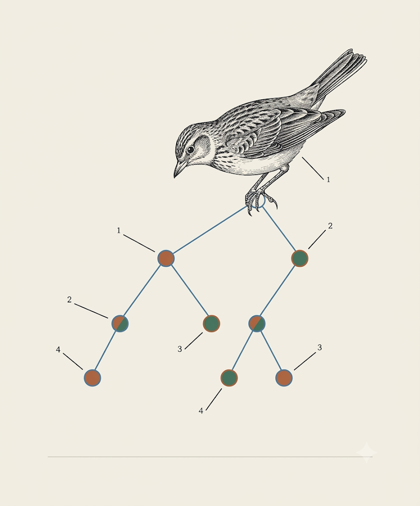

A Rust implementation of the Lark parsing toolkit
lark-rs
One grammar. Three engines. Native Rust.
Use the same Extended Backus–Naur Form grammar with LALR, Earley or CYK. Build automatic parse trees and reuse the core from Rust, Python, WebAssembly or C. Behaviour is checked against Python Lark.
Lark grammars, native Rust — checked, not claimed.

Checked, not claimed
One grammar, three engines
Pick the parser, keep the grammar
The same .lark grammar runs under three algorithms — you change one option,
not your grammar. Each comes with the lexer that suits it.
?start: value
?value: object
| array
| ESCAPED_STRING
| SIGNED_NUMBER -> number
| "true" | "false" | "null"
array : "[" [value ("," value)*] "]"
object : "{" [pair ("," pair)*] "}"
%import common.ESCAPED_STRING
%import common.SIGNED_NUMBER
%ignore common.WSPick the parser, keep the grammar — for real.
Loads the lark-rs WebAssembly engine (~1 MB) and parses entirely client-side.
Change the Parser control between lalr, earley
and cyk on the same grammar and watch the tree.
Why lark-rs
Why this, and not an adjacent Rust parser
lark-rs is for people who value Lark's grammar model: one EBNF grammar, a choice of parsing algorithm, contextual lexing, automatic trees and explicit ambiguity. It is not trying to be an incremental editor parser — that is a different problem.
| Tool | Its focus | How lark-rs differs |
|---|---|---|
| tree-sitter | Incremental, error-tolerant parsing for editors | lark-rs targets batch grammar-driven parsing with automatic trees and a choice of algorithm — not incremental editor reparsing. |
| pest | Accessible PEG grammars | lark-rs uses EBNF/CFG with explicit ambiguity (Earley/CYK), contextual lexing and Lark-compatible semantics. |
| chumsky | Parser combinators with error recovery | lark-rs is grammar-first: you write a .lark file, not Rust combinators. |
| LALRPOP | LR(1) parser generation | lark-rs keeps LALR but adds Earley + CYK behind the same grammar, plus contextual lexing. |
The wedge: if you already have a .lark grammar, keep it — change the runtime, not the grammar.
Architecture
Four stages, one pipeline
A grammar becomes a parser in four clear stages. The engine never inspects a symbol name — everything is interned to integer ids first.
Load
Hand-written lexer + recursive-descent parser turn .lark text into a surface grammar (rules, terminals, imports).
Lower
Every symbol is interned to a Copy id; tree-shaping flags and augmented start rules are precomputed.
Build
The chosen engine builds its tables: dense LALR action/goto, the Earley recognizer + SPPF, or CYK's CNF.
Parse
Tokens drive the engine; automatic tree shaping yields Tree / Token with no user action code.
.lark grammar → load → lower → build → parse → Tree / Token
Full tourist map: ARCHITECTURE.md.
Evidence-gated development
Autonomy ends where verification ends
lark-rs is developed with coding agents, but authority follows evidence — not confidence. A change may proceed autonomously when its result can be checked against Python Lark, a compliance bank, a regression test or a deterministic complexity gate. Decisions without an objective basis remain with the human architect.
The result can be independently checked.
Evidence narrows the choice but does not settle it.
The question is product direction, taste or an ungrounded trade-off.
Four concrete manifestations in the repository:
| Principle | In lark-rs |
|---|---|
| Oracle before implementation | Python Lark produces the expected behaviour before a feature is written. |
| Demonstrate before fixing | Bugs and performance pathologies become failing cases first. |
| Deterministic evidence | Complexity regressions use work counters, not noisy timing thresholds. |
| Durable decisions | Important trade-offs and exceptions are recorded in the repository (ADRs). |
Every significant claim on this page carries one of four statuses:
Verified enforced by an oracle, bank or gate Measured observed in a named benchmark Goal a stated direction, not yet shown Open a known limitation
Not every valuable property has an oracle. API ergonomics, product direction and some resource-policy questions still require judgement. When the project cannot make a decision falsifiable, it records the uncertainty rather than pretending otherwise. See PRINCIPLES.md.
What you keep from Lark
The differentiators, preserved
Contextual lexer
Parser state narrows which terminals the lexer tries — resolving most LALR terminal conflicts with no user intervention.
Explicit ambiguity
SPPF-based Earley handles any CFG and can emit _ambig forests when a grammar is genuinely ambiguous.
Rich EBNF
+ * ?, alternation, char ranges, priorities, aliases, and parameterized templates.
Automatic trees
Tree / Token without action code, with ?rule, _rule and !rule shaping modifiers.
Grammar composition
%import pulls terminals and rules from bundled libraries or sibling files — common terminals can't drift from Lark.
Multiple targets
One core, reachable from Rust, Python (PyO3), WebAssembly and a C API — plus standalone parser generation.
Targets
One core, many runtimes
Rust crate
The native API: Lark, LarkOptions, ParserAlgorithm, LexerType.
Python (PyO3)
Native bindings, so a Lark grammar can run on the Rust core from Python.
C API
A C-callable surface for embedding in native applications.
Generated parser
Emit a self-contained Rust LALR parser that depends only on regex + std.
Performance
Measured first, honestly
Lead with measured compatibility; treat performance as a documented snapshot, not a slogan.
~4–5× Python Lark (LALR)
On the reference JSON workloads: ~4.8× small, ~4.7× medium, ~4.4× large, vs in-tree Python Lark's LALR engine.
10–100× on suitable workloads
The project's stated direction — explicitly a goal, not the present general result.
Deterministic scaling gates
Earley super-linearity, the CYK cubic envelope and lexer scans are gated on work counters, never wall-clock.
Methodology and the full trend: BENCH.md.
Known limits
What is still open
lark-rs is pre-user: backward compatibility is still free because there are no real dependants yet. A clearly labelled open gap is more useful than an unsupported "production-ready" badge.
- OpenPublic API stability — not yet pinned ahead of first dependants.
- OpenPackaging & release cadence — install from source for now, not a published crate version.
- OpenSome lookaround terminal shapes are refused by design or not yet implemented (categorized, not silent).
- OpenGrammar-author ergonomics & diagnostics are judgement-heavy and only partly gated.
Quick start
Run an example, then read the source
Until packaging is settled, start from source — the JSON example is the canonical entry point.
# clone the fork and run the canonical JSON example
git clone https://github.com/okalldal/lark.git
cd lark/lark-rs
cargo run --release --example json_parser
cargo test